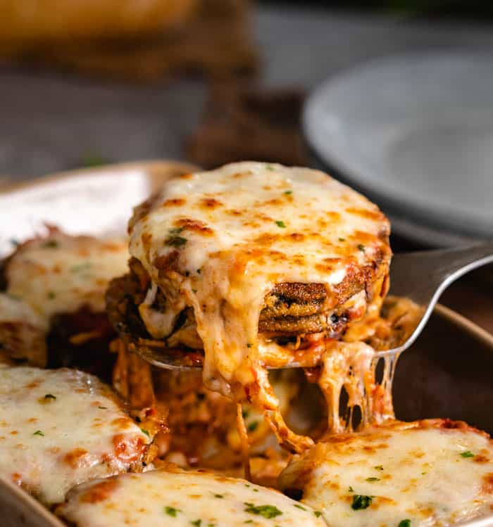

This Eggplant Parm will amaze you and the family. Anyone that you introduce this to will be knocking down your door to get this recipe!
Ingredients:
- Italian Breadcrumbs
- Marinara Sauce
- Flour
- Garlic Powder
- Seasoned Salt
- Eggs
- Mozzarella Cheese
- Parmesan Cheese
Steps:
- Salt the eggplant to remove excess moisture
- This is key to crispy results. Eggplants are 92% water. Failure to remove some of this water will results in soggy Eggplant Parmesan
- Slice the eggplant into 1/4 inch slices and line them on paper towels.
- Salt each side
- Top the slices with paper towels and let them sit for one hour. The paper towels will absorb the excess moisture during this time.
- Bread it.
- Dip each slice into the seasoned flour mixture, then briefly in a whisked eggs, and then coat well with breadcrumb mixture
- Lightly fry for a golden brown crust
- Fry in batches of about 4 at a time. Leave breathing room around each slice to allow them to crisp up as well.
- Cast Iron skillets conduct heat the best and give you a nice golden brown, crispy surface.
- Assemble in a baking dish and bake
- Preheat the oven to 375 degrees.
- Spoon marinara sauce on the bottom of a 9 x 13 inch casserole dish.
- Layer with eggplant slices. Top with marinara sauce, then with mozzarella cheese.
- Repeat with 2 more layers of eggplant, marinara, mozzarella.
- Top with Parmesan.
- Bake uncovered for 20-25 minutes
Return to top
Return to Main Page